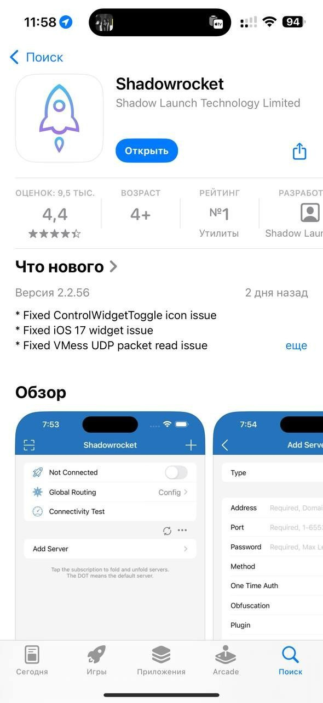
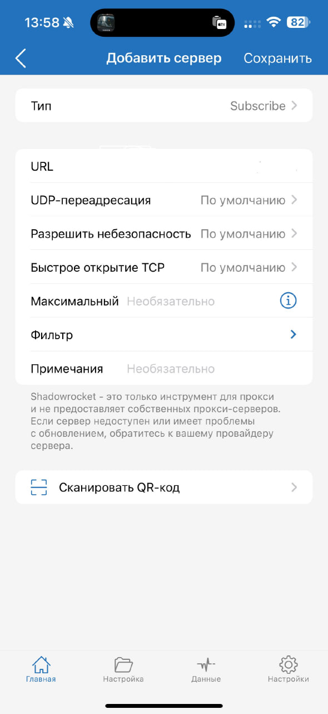
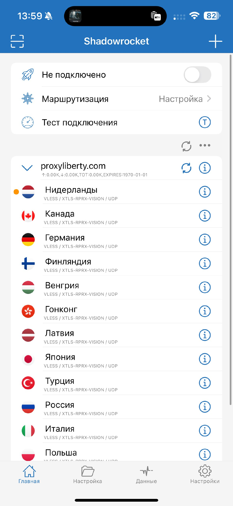
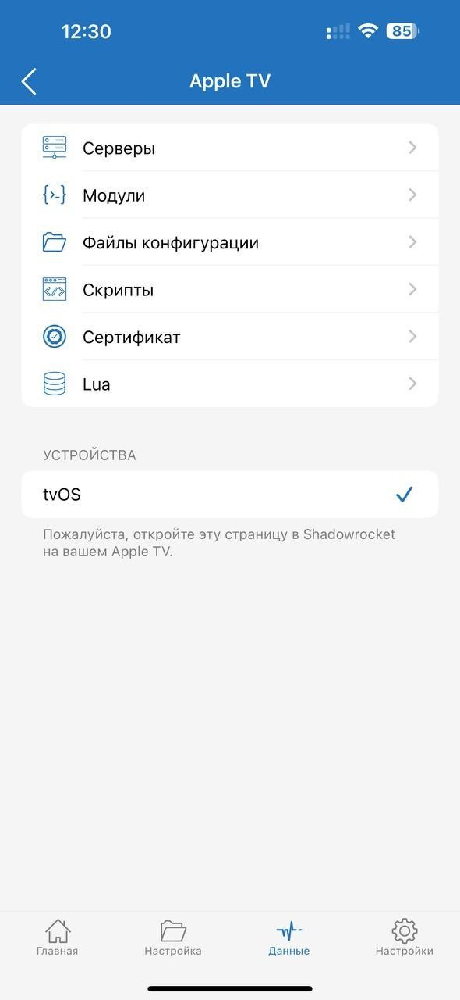
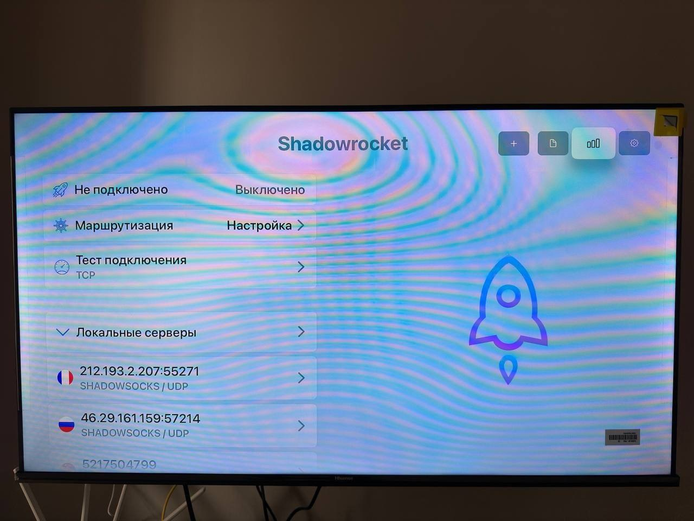

Инструкция для Apple TV
Способ для владельцев iPhone и другой техники Apple.
- Первым делом нам понадобится приложение Shadowrocket, оно платное - 249₽ навсегда (это не подписка). К сожалению других способов для платформы пока нет.
скачайте приложение

- Его нам нужно установить и на приставку и на смартфон.
После этого мы берем ключ vless и возвращаемся в приложение.
• Нажимаем плюсик в правом верхнем углу.
• Тип - Subscribe
• URL - наш ключ
- Жмем "Сохранить" и получаем список серверов. На iPhone/iPad с этого момента уже можно подключиться.  
- После этого открываем на нижней панели "Данные" и жмем AppleTV. Ту же вкладку открываем на телевизоре.  
- Нажимаем на телефоне "Серверы". Когда данные перейдут на приставку приложение напишет вам "Успешно".
После этого возвращайтесь на главную страницу приложения и подключайтесь.
Готово, VPN подключен и готов открывать для вас сайты и медиа, а вы - прекрасны 🫵🫦